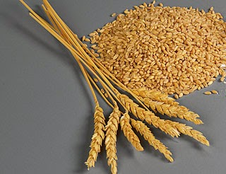

[লেখাটি ইতোপূর্বে পাই জিরো টু ইনফিনিটি ম্যাগাজিনে প্রকাশিত হয়েছিল।]
দাবা খেলা আবিষ্কারের প্রেক্ষিতে পুরষ্কার প্রদান নিয়ে মজার ঘটনাটি আমরা সবাই কম বেশি জানি। দাবার উদ্ভব পূর্ব ভারতের গুপ্ত সাম্রাজ্যে। শুরুর দিকে এর নাম ছিল চতুরঙ্গ। কে এই বুদ্ধির খেলা আবিষ্কার করেন তা সঠিকভাবে জানা যায় না। তবে জানা যায়, তিনি স্বৈরাচারী রাজাকে বোঝাতে চেয়েছিলেন যে প্রত্যেকেই, এমনকি রাজ্যের তুচ্ছ মানুষটিও কতটা গুরুত্বপূর্ণ হতে পারেন।

যাই হোক, রাজা চতুরঙ্গে মুগ্ধ হলেন। তিনি আবিষ্কর্তাকে পুরষ্কার দিতে চাইলেন।
বললেনঃ কী চাই তোমার?
উদ্ভাবক বললেন,
বোর্ডের প্রথম ঘরের জন্য আমি একটি গম চাই। ২য় ঘরের জন্যে ২টি, ৩য় ঘরের জন্য চারটি…। এভাবে প্রত্যেক ঘরের জন্য আগের ঘরের দ্বিগুণ দিয়ে দিয়ে ৬৪ ঘরে যত গম হয় তা দিলেই চলবে।
রাজা তাঁকে এই ‘তুচ্ছ’ প্রাইজ চাওয়ার জন্য যারপরনাই তাচ্ছিল্য করলেন।
কর্মচারীদের নির্দেশ দিলেন, ‘এখনই একে গম দিয়ে বিদেয় কর।’
কিন্তু গমের হিসাব করতেই সপ্তাহ পেরিয়ে গেলো। ফলাফল যা বেরুলো, সেই পরিমাণ গম রাজার চৌদ্দপুরুষেও দেওয়া সম্ভব নয়। তাই গল্পের কোনো এক সংস্করণের মতে রাজা পরে তাঁকে তার মন্ত্রী বানিয়ে নেন।
চলুন তাহলে দেখে ফেলি ঐ উদ্ভাবক কত গম পেতেন, যা দেওয়া রাজার জন্য অসম্ভব হয়ে গেলো।
প্রথম ঘরের জন্য ১ টি, ২য় ঘরের জন্য ২ টি…… এভাবে প্রতি ঘরে আগের ঘরের দ্বিগুণ হতে থাকলে মোট গমের সংখ্যাকে আমরা নিচের ধারায় প্রকাশ করতে পারি-
1 + 2 + 4 + 8+…
(৬৩ বার দ্বিগুণ করে যোগ করা হবে। কেননা শুরু হয়েছে ১ থেকে।)
= 20 + 21 + 22 + 23+…+ 263 ।
এর মান আমরা কয়েকভাবে বের করতে পারি।
যেমন, ধরি
S = 20 + 21 + 22 + 23+…+ 263
^ ^
উভয়পক্ষকে 2 দ্বারা গুণ করে, 2S = 21 + 22 + 23 + … + 264
বিয়োগ করে,
2S - S = -20 + 264 ∴ S = 264 - 1
অথবা ধারার মাধ্যমে বের করতে পারি। উপরের ধারাটি একটি গুণত্তর ধারা যা এ রকম, a + ar + ar2 + … + ar(n-1) যেখানে প্রতিটি পদ হল ark ; আর k এর মান হল ০ থেকে (n-1) পর্যন্ত। আমরা জানি, এমন ধারার সমষ্টি \[\sum_{k=0}^{n-1}(ar^k) = a (\frac{1-r^n}{1-r})\] তাহলে, আমাদের এখানে প্রথম পদ, a = 1। সাধারণ অনুপাত (যেহেতু গুণোত্তর ধারা), r = 2 (যেমন \(\frac{2^2}{2^1}=\frac{4}{2}=2\)) এবং n = 64 অতএব, সমষ্টি \[\sum_{k=0}^{64-1}(ar^k) = 1 (\frac{1-2^{64}}{1-2})\]
\[= (\frac{1-2^{64}}{-1}) = 2^{64} -1\]
= 18,44 6,744,073,7 09,551,615
অর্থাৎ, রাজাকে এতগুলো গম প্রদান করতে হবে। অনেকের কাছে হয়তো এখনও মনে হচ্ছে এ আর এমন কি! এটা ১৮৪৪ কোটি কোটি (আবার বলছি কোটি কোটি) টি গমের চেয়েও বেশি।
আসুন গম গুলোকে বস্তায় ভরি! দেখি কত বস্তা গম হয়।
তাহলে, আগে বের করতে হবে প্রতি বস্তায় কত গম ধরবে। আর সেজন্য জানা দরকার গম ও বস্তার আকার। স্বাভাবিক আকারের বস্তার ব্যাস হয় প্রায় ২ ফুট (61 সে.মি., তাহলে, ব্যাসার্ধ, r= ৩০.৫ সে.মি.) , উচ্চতা (h) আড়াই ফুট (76 cm)।
অতএব, প্রতি বস্তার আয়তন \[V =\pi r^2h\] (যেহেতু বস্তা সিলিণ্ডার আকৃতির।) মান বসিয়ে, \[V = 3.1416 × 30.5^2 × 76 cm^3\] \(= 2, 22, 107 cm^3\) (প্রায়)
এবার গমের আয়তন বের করি।

আমরা জানি গমের আকার হয় দৈর্ঘ্যে যথাক্রমে প্রায় ৫ ও ৯ মিলি মিটার। গমকে যদি আমরা উপবৃত্ত বিবেচনা করি তাহলে যেহেতু উপবৃত্তের আয়তন হচ্ছে \(\frac{4}{3}\pi abc\), যেখানে a, b,c হচ্ছে মূল বিন্দু বা কেন্দ্র থেকে অক্ষত্রয়ের প্রান্তিক সীমা।
গমের ক্ষেত্রে আমরা বলতে পারি, বৃহত্তর অক্ষ , a = 9/2 = 4.5 mm = .45 cm। গমের আকৃতির জন্য অন্য দুইটি অক্ষ সমান, ফলে b = c = 5/2 = 2.5 mm = .25 cm।
তাহলে প্রতিটি গমের আয়তন \[\frac{4}{3}×0.45 × 0.25 × .25 cm^3 = 37.5 cm^3 = .0375 cm^3\] অতএব, বস্তার আয়তনকে গমের আয়তন দিয়ে ভাগ করে আমরা পাই, প্রতি বস্তায় গমের সংখ্যা 59, 22, 879 টি (প্রায়)।
তাহলে মোট গমের সংখ্যাকে এটা দিয়ে ভাগ করে আমরা পাই, 3, 11, 44, 89, 435, 579 বস্তা।
অর্থাৎ মোত এতটি বস্তা লাগবে। এর মানে ৩১ লাখ ১৪ হাজার ৪৮ কোটি ৯৪ লাখ ৩৫ হাজার পাঁচশ ৭৯ বস্তা গম লাগবে। এবার ভাবুন! কি পরিমাণ শুধু বস্তাই লাগবে!!
১ লাখ বস্তা গমই তো কত! অথচ এখানে ৩১ লাখ ১৪ হাজার কোটিরও বেশি!
বাস্তবে অবশ্য বস্তার সংখ্যা আরো বেশি হবে, কারণ এখানের হিসাবে বস্তায় গম ১০০% ঠেঁসে ভরা হয়েছে, ফলে বস্তায় একটুও ফাঁকা যায়গা নেই। কিন্তু বাস্তবে বস্তায় কিছু জায়গা ফাঁকা থাকবে।
এ পরিমান গমের ওজোন কত? আমরা জানি, গমের ওজোন (সঠিক করে বললে ভর) হয় ৩৫ থেকে ৫০ মিলি গ্রাম। না হয় আমরা গড়ই নিলাম, ৪২ মিলি গ্রাম = ০.০৪২ গ্রাম = ০.০০০০৪২ কেজি।
তাহলে মোট ভর (প্রচলিত ভাষায় ওজন) = 18,446,744,073,709,551,615 × .000042 kg।
অর্থাৎ 774763251095801 কেজি (প্রায়) = 774763251095 মেট্রিক টন।
বা প্রায় ৭ হাজার সাড়ে ৭ শ কোটি মেট্রিক টন।
এবার মনে হয় আমরা বুঝতে পারছি, কেন রাজা এ পুরষ্কার দিতে অপারগ হলেন।
বিশ্বে গম উৎপাদনের পরিসংখ্যানের দিকে তাকালে আমরা দেখি ২০১২ সালে সর্বোচ্চ ১৩৪ মেট্রিক টন গম উৎপাদিত হয় ইউরোপিয়ান ইউনিয়নভুক্ত দেশগুলোতে। একক দেশ হিসেবে চীন সর্বোচ্চ ১২৫ মেট্রিক টন উৎপাদনে সক্ষম হয়। সারা বিশ্বে ঐ বছর মোট ৬৭৫ মেট্রিক টন গম উৎপাদিত হয়। উইকিপিডিয়ার ভাষ্য মতে, ওই পর্যন্ত ১৭ বছরে সারা বিশ্বে মোট ৯, ৮৭৯ টন গম হয়।
এই গম উৎপাদন করতে কত বছর লাগবেঃ রাজাকে যদি সুযোগ দেওয়া হত যে সারা বিশ্বে প্রতি বছর যে গম উৎপাদন হবে তা আপনাকে দিয়ে দেওয়া হবে, তবে পুরষ্কার দিতে রাজার কত সময় লাগবে?
গড়ে প্রতি বছর প্রায় ৬৮০ টন গম ফলে। তাহলে ৭ হাজার সাড়ে ৭ শ কোটি টন গম ফলাতে কত বছর লাগবে? উত্তর হচ্ছে 113,93,57,722 বছর বা ১১৩ কোটি ৯৩ লাখ ৫৭ হাজার ৭২২ কোটি বছর। বাহ! দারুণ ব্যাপার!
পৃথিবীর বয়স সাড়ে ৪ শ কোটি বছর। ঐ গম ফলাতে তার প্রায় এক-চতুর্থাংশ সময় লাগবে! (তাও এখন প্রযুক্তির কল্যাণে বেশি ফলন হচ্ছে, আদি কাল থেকে ফলাতে হলেই সেরেছে! কিয়ামত হয়ে গেলেও শেষ হত না, নিশ্চিত করেই বলা যায়)। আর মানুষও তো পৃথিবীর শুরু থেকেই ছিল না। পৃথিবীতে মানুষের আবির্ভাব ঘটেছে ২ লক্ষ বছর আগে।
তার চেয়ে দুই বন্ধুর কৌতুকের মতে বলে দেওয়া বড়ই সুবিধাজনক,
বন্ধু, তোমার এই ঋণ আমি কোন দিন শোধ করতে পারবো না 😛
সূত্রঃ ১। http://arimaa.com/arimaa/links/chessStory.html ২। http://en.wikipedia.org/wiki/Wheat_and_chessboard_problem ৩। http://www.bakeinfo.co.nz/Facts/Wheat-Milling/Wheat/Wheat-grain ৪। http://www.infoplease.com/ipa/A0001659.html ৫। http://en.wikipedia.org/wiki/International_wheat_production_statistics